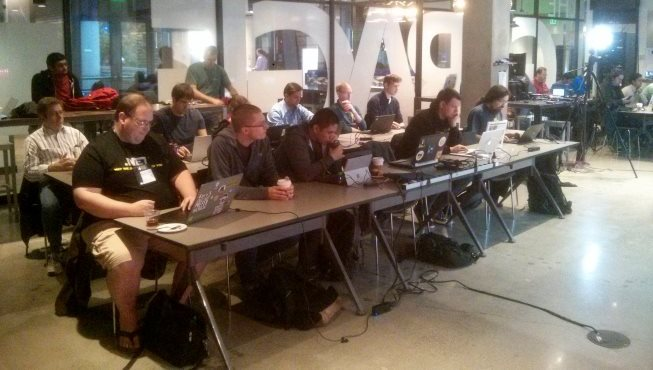

F# + ML |> MVP Summit Talk recordings, slides and source code

I was fortunate enough to make it to the Microsoft MVP summit this year. I didn't learn anything secret (and even if I did, I wouldn't tell you!) but one thing I did learn is that there is a lot of interest in data science and machine learning both inside Microsoft and in the MVP community. What was less expected and more exciting was that there was also a lot of interest in F#, which is a perfect fit for both of these topics!
When I visited Microsoft back in May to talk about Scalable Machine Learning and Data Science with F# at an internal event, I ended up chatting with the organizer about F# and we agreed that it would be nice to do more on F#, which is how we ended up organizing the F# + ML |> MVP Summit 2015 mini-conference on the Friday after the summit.
We run the event in the pretty cool Garage space on the campus. This means that we had to limit the number of attendees to about 45. We thought that was enough only to find out that 50 more MVPs and Microsoft employees ended up on the waiting list and could not fit in! Fortunately, the whole event was also recorded by the awesome folks from Channel 9 and so you can watch the recordings and get the code below!
Doing data science with FsLab

In the morning, we did two talks. I talked about the FsLab project and data science libraries including F# Data, Deedle, R type provider and XPlot:
- Watch the recording on Channel 9
- Get the slide deck created using FsReveal
- Get the source code from GitHub
Crunching through big data with MBrace

The second talk on the day was by Mathias Brandewinder who talked about scaling machine learning algorithms to the cloud using the awesome MBrace project:
- Watch the recording on Channel 9
- Get the source code from GitHub
Machine learning with F# and Accord.NET

And although this was not a part of the F# + ML event, Alena aka @@lenadroid also talked about machine learning and F# at the .NET user group in Redmond earlier in the week, so let me include it in the list:
- Watch the recording from DevDay in Krakow
- Get the slides from Alena's presentations page
After the lunch, we spent 2.5 hours working on a coding dojo where all the attendees had to solve a machine learning problem in F# almost from scratch. We worked on a simple algorithm that recognizes the language of a text (downloaded from Wikipedia using an asynchronous crawler) using k-nearest neighbor algorithm and also using a simple perceptron. The last part of the event, which was equal fun, involved ask the experts sessions featuring the numl library, the Prajna project and Azure ML demos.
Summary
The one takeaway from the event was that there is a lot of interest in machine learning and data science and F# is a great fit for both. If you are a .NET developer, then using F# is an obvious choice and there is a great book for you. If you are not a .NET developer, then F# still has a lot to offer and you can check out this free O'Reilly report. With 50 people on the waiting list, I think we'll just need to make a bigger event in the future!
Finally, if you are interested in using F# for machine learning and data science at work, let me add that me and Mathias are both offering F# training and workshops via fsharpWorks and so if you want to learn more, drop us an email!
Published: Wednesday, 18 November 2015, 3:03 AM
Author: Tomas Petricek
Typos: Send me a pull request!
Tags: f#, fslab, talks, machine learning, data science